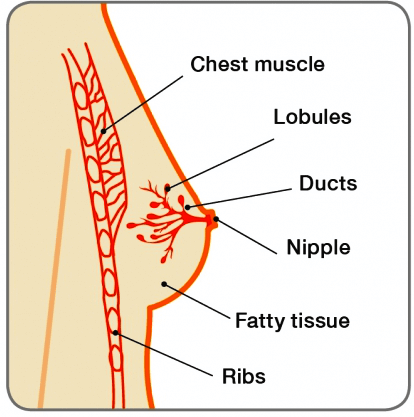
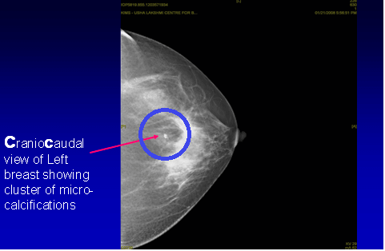
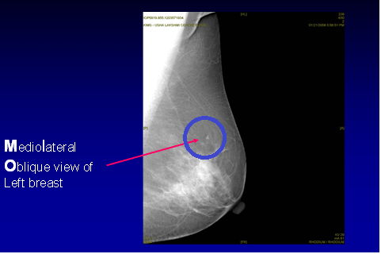

THE NIPPLE

THE BREAST

THE NIPPLE
Martina Navratilova, a Sports legend, nine time Wimbledon Singles Champion was diagnosed with Ductal Carcinoma In Situ (DCIS), an early form of breast cancer. She was 53 years old in 2010 and had skipped her annual Screening Mammogram for four years. Although it is recommended to have annual Screening Mammograms from the age of 40. she admits her healthy lifestyle and status created certain complacency when it came to following through with her annual checkups.
"I went four years between mammograms," she told in an interview in 2010. “Everyone gets busy, but don't make excuses. I stay in shape and eat right, and it happened to me. Another year and I could have been in big trouble." Luckily, the cancer was detected at its earliest stage. She underwent a Wide local excision (lumpectomy) and completed radiation therapy in May 2010.
Sheryl Crowe, a well known singer & nine time grammy award winner and Christine applegate, another well known hollywood actor were diagnosed with early impalpable breast cancer because of screening mammogram.
What is DCIS?
The breast is made up of ducts, lobules and fatty tissue. Ductal Carcinoma In Situ (DCIS) is an early form of Breast cancer where the cancer cells are inside the ducts (that carry milk to the nipple). This is a pre cancerous condition where cancer cells have not developed the ability to spread beyond the milk ducts into the normal surrounding breast tissue
How common is DCIS?
According the American Cancer Society, about 60, 000 Cases of DCIS are diagnosed each year in the United States (accounting for I in 5 new cases of breast cancers diagnosed each year). In India, according to the Indian Council of Medical Research (ICMR), about 150, 000 new cases of breast cancer are diagnosed each year. However, there are no precise statistics on the incidence of DCIS. Due to lack of awareness and absence of organised screening programme, more than 60% breast cancers in our country present in advanced stage, with most succumbing within a year of being diagnosed. Every ten minutes a woman in India succumbs to breast cancer
How does DCIS present?
DCIS does not usually present with any symptom. The vast majority of DCIS (more than 80%) are detected on screening Mammography. DCIS may present with a blood stained discharge from the nipple, a rash around the nipple (referred to paget’s disease) or very rarely with a lump in the breast.
How is DCIS diagnosed?
DCIS is detected on routine Breast Screening assessment. Assessment includes Clinical breast Examination by a Specialist, Breast imaging (Mammogram of both breasts & Ultrasound of the breasts) and a needle core biopsy (TRIPLE ASSESSMENT).
As DCIS very rarely presents with a lump, Clinical breast examination is not usually helpful. The Mammogram, which is the gold standard for breast Screening, usually shows a cluster of abnormal looking (pleomorphic) microcalcifications – tiny specks of calcium which appear as white dots on the mammogram. It must be remembered however that not all microcalcifications are cancerous. It requires skill and diligence of a Multidisciplinary team to detect DCIS.



Finally, to make a diagnosis, a piece of tissue is removed by doing a core needle biopsy which is done under stereotactic guidance (with the help of mammogram) under local anaesthesia. The other type of needle biopsy, Fine needle Aspiration Biopsy (FNAC), which is commonly used for palpable breast lumps can be misleading and will not distinguish a invasive cancer (cancer that has spread into breast tissue) from DCIS. Needle core biopsy is by far very accurate

On some occasions, excision biopsy under general anaesthesia using a fine guide wire to localise the microcalcifications may be necessary to obtain a diagnosis when the cluster of microcalcifications are very tiny and few to get a diagnosis with needle core biopsy
How is DCIS graded & what is its significance?
DCIS is graded depending on the appearance of the cells under the microscope and also on how quickly these cells divide. It can be graded as high-, intermediate grade and low-grade DCIS. If DCIS is left untreated, the cancer cells may eventually develop the ability to spread from the ducts into the surrounding breast tissue. This is known as invasive breast cancer. It is less likely for low grade DCIS to become an invasive breast cancer than high-grade DCIS.
How is DCIS treated?
The aim of treatment is to remove all DCIS within the breast to prevent the development of invasive breast cancer. The treatment depends upon the factors such as the extent of the DCIS within the ducts and the grade.of DCIS
A.Surgery Breast conserving SurgeryBreast surgery is the first line treatment for DCIS. If DCIS is localized & confined to one area of the breast, breast conservation surgery can be performed. As the cancer can neither be felt by the patient nor by the doctor, a fine guide wire is inserted under local anaesthesia into the breast to pinpoint the abnormal area of the breast. This acts as a guide and the Surgeon is then able to remove the area of DCIS along with an area of surrounding normal breast tissue (Guide wire assisted wide local excision)
BREAST CONSERVING SURGERY -
WIDE LOCAL EXCISION


A mastectomy is surgical treatment of choice if the DCIS affects a large area of the breast; or if it hasn’t been possible to get a clear area of normal tissue around the DCIS using breast conserving surgery; or if there is more than one area of DCIS in the breast (multifocal DCIS). If a mastectomy is recommended, the patient should be given the option to have an immediate Breast reconstruction at the same time as primary surgery to minimize the psychological and emotional trauma associated with removal of breast. Generally, the lymph glands in the armpit do not need to be removed as the DCIS has not spread to the breast tissue from the ducts.
REMOVAL OF BREAST -
MASTECTOMY

Courtesy: Breast Cancer Care, UK


Further treatment is required following surgery. This is referred to as adjuvant therapy and includes radiotherapy and Hormone therapy
RadiotherapyIf breast conservation surgery has been performed, the standard adjuvant treatment would be six weeks of external beam radiotherapy to the operated breast. If the patient has had Mastectomy, radiotherapy is not required.
Hormone therapyIf the type of DCIS depends on hormone oestrogen to grow (oestrogen receptor positive), Hormone therapy in the form of Tamoxifen may be offered. This will also depend on other factors such as the grade of the DCIS.
ChemotherapyChemotherapy is not required for treatment of DCIS
Is DCIS life threatening & What is the prognosis from DCIS?
No. As the cancer has not spread beyond the milk ducts into any normal surrounding breast tissue, DCIS is not life-threatening. The long term survival rate for women with DCIS is excellent, close to 100% (98% - 99%).